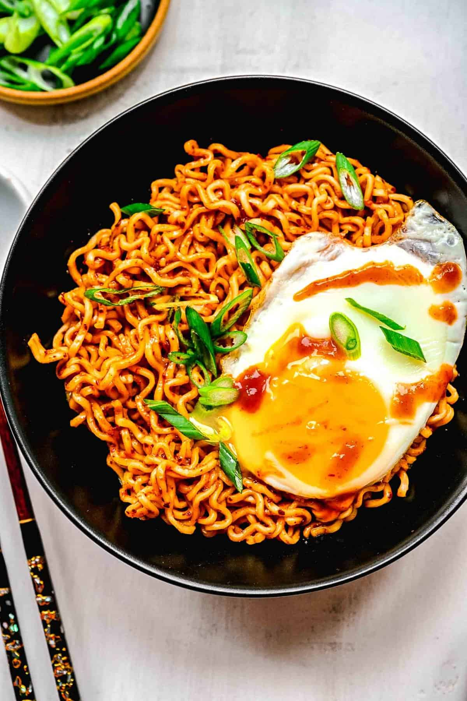

Buldak

Description
Buldak (literally translating to "fire chicken" in Korean) originally refers to a highly spiced, barbecued chicken dish featuring gochugaru and gochujang. Today, it is globally recognized as the wildly popular Hot Chicken Flavor Ramen brand produced by Samyang Foods, famous for its thick, chewy stir-fried dry noodles, its fire-breathing chicken mascot "Hochi," and an intense, addictive heat.
Ingredients
500g Chicken thigh, cut into bite-sized pieces (thighs stay juicy under intense heat)
1 tbsp Vegetable oil
100g Rice cakes (Tteokbokki), optional but highly recommended
1 cup Mozzarella cheese, shredded (essential for balancing the fire)
1 Green onion, chopped for garnish
1 tbsp Oyster sauce
Steps
Marinate the Chicken: In a medium bowl, whisk together all the Fire Sauce ingredients until smooth. Toss in the bite-sized chicken pieces and mix until completely coated. Let it marinate for at least 15 to 30 minutes.
Sear the Meat: Heat the vegetable oil in a heavy skillet or cast-iron pan over medium-high heat. Add the marinated chicken in a single layer. Cook for 5–7 minutes until the edges start to slightly char and caramelize.
Add Rice Cakes: If you are using rice cakes, pour in 1/4 cup of water along with the rice cakes. Lower the heat to medium, cover with a lid, and let it simmer for another 3–5 minutes until the chicken is thoroughly cooked through and the rice cakes are soft and chewy.
Melt the Cheese: Turn off the heat. Scatter the shredded mozzarella cheese generously across the top of the hot chicken. Cover with the lid for 2 minutes, or pop the pan under an oven broiler for a minute until the cheese is melted, bubbly, and slightly golden.
Garnish and Serve: Top with chopped green onions and sesame seeds. Serve immediately while the cheese stretch is at its peak.